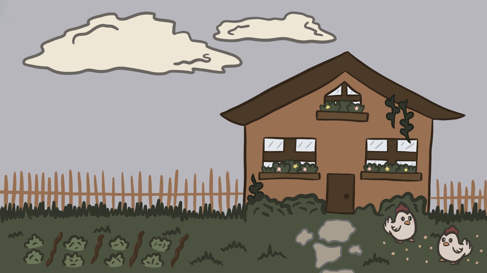
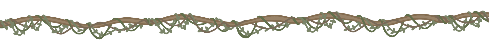
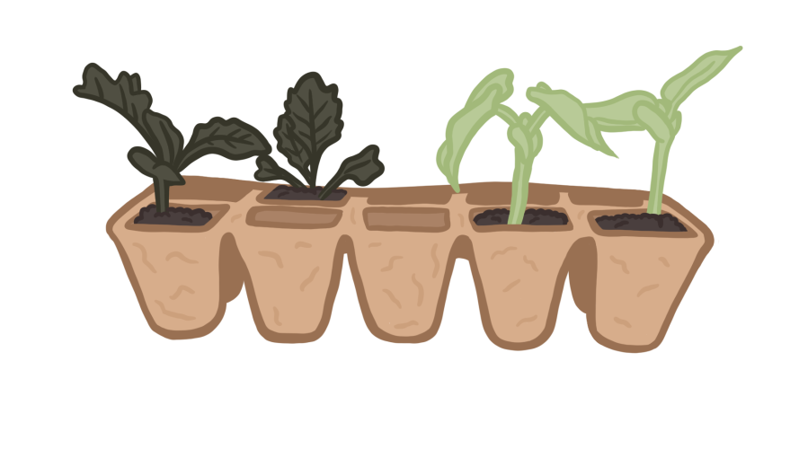
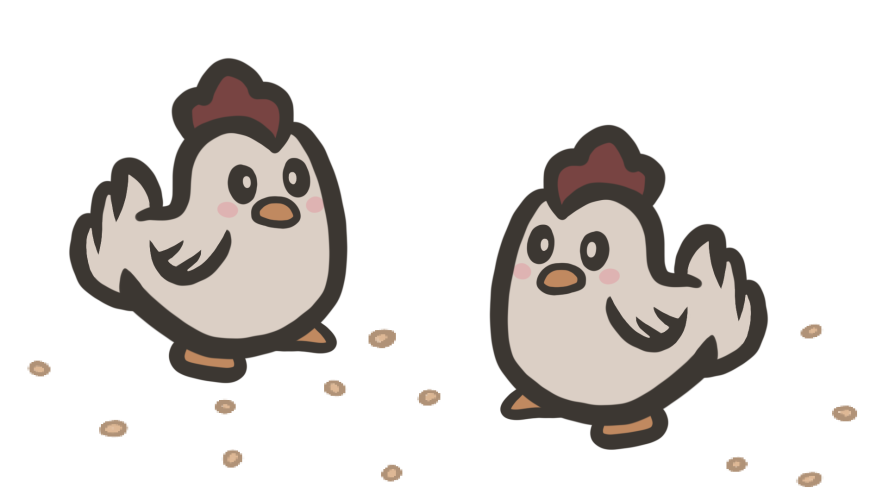
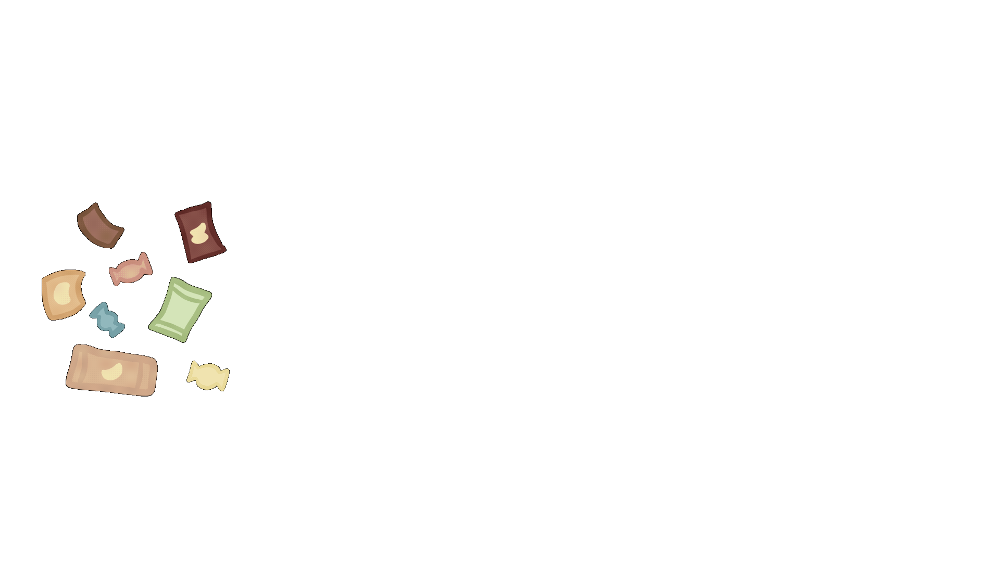
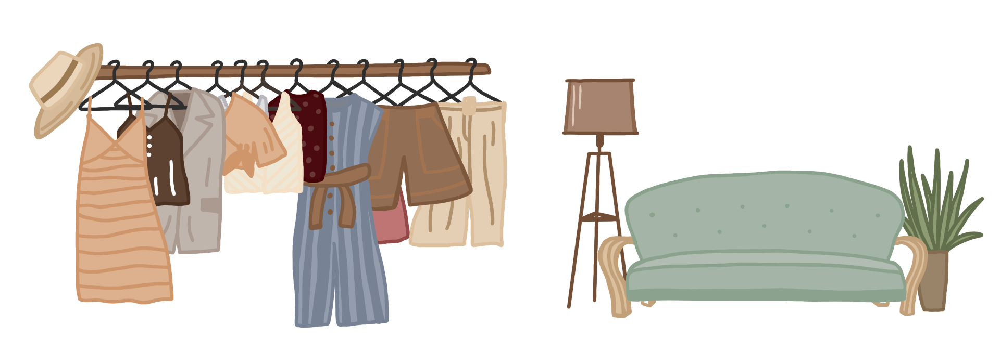
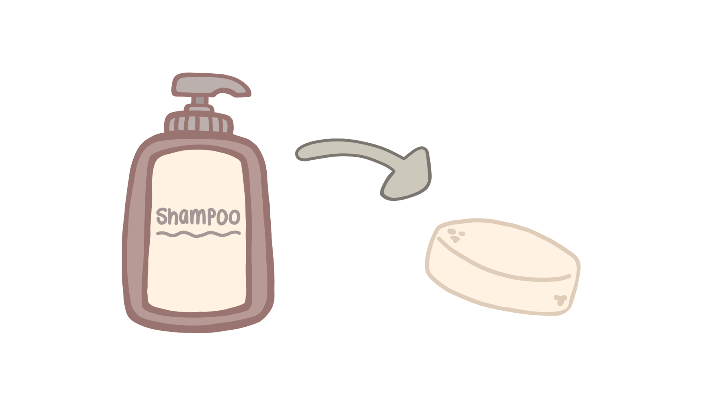
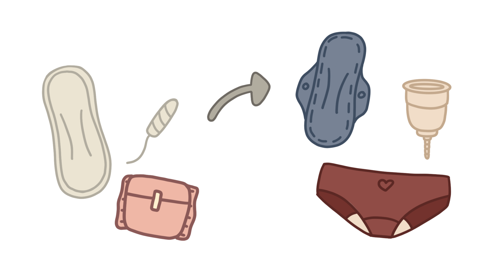
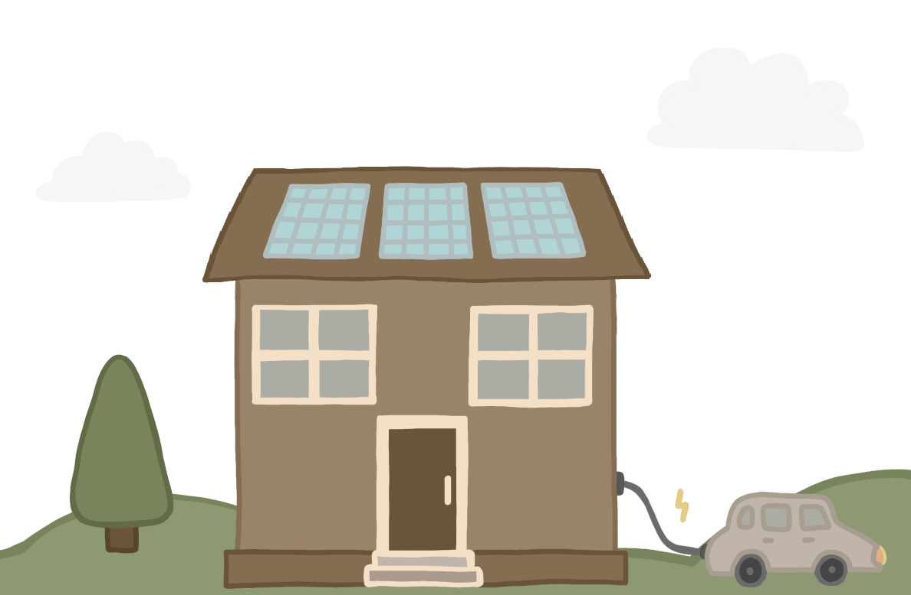
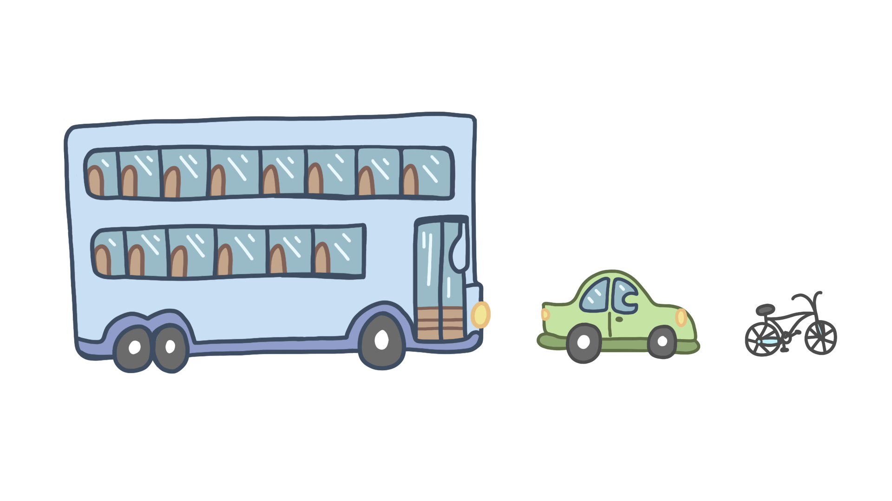

providing your own food
Anyone can provide their own food. Wether you have a big garden with
tools and a greenhouse, or a just some space on a windowsill. Save seeds, or the ends of
any of your favorite veggies and use egg cartons as mini planters! Want unlimited spring
onions or lettuce? Just pop the bottom ends into a glass of water and watch it grow in just
a few days!


If you have the privilege of a large garden, consider keeping chickens!
Not only are they cute, but they will also lay eggs, which are a fantastic protein source.
A little chicken wire goes a long way for protecting them for any predators.
what should i do with my waste?
Figuring out what to do with your waste can be extremely overwhelming, this guide
will help you manage all of your unwanted things :)
eco bricks
A lot of plastic still can't be recycled, but fear not!
Eco bricks are the solution for all of your crisps and sweet packets
that would usually go into the bin.To make an eco brick, you will need a lot of washed, clean plastic and a clean
plastic bottle.
Step 1: Wash your all of your plastic.
Step 2: Place the plastic into the bottle.
Step 3: Tightly press the plastic into the bottle with some sort of stick.
Step 4: Fill the bottle completely to get out all the air and close it shut.
Step 5: Donate your bottles! (Eco bricks turn into buildings like houses!)

sustainable shopping
Sustainable shopping doesn't have to be expensive!
Buying from charities is a wonderful option to reduce waste.
Plenty of charities sell things for as little as a few pence!

stop buying single use items!
Single use items are the worst for waste. They usually aren't recyclable
and you spend tons of money buying them over and over again. Swapping bottled shampoo for shampoo
bars are one of the easy swaps you can do today!
(bonus points if you buy from a small business ;)


Period products are another massive producer of waste. Simply swapping to
reusable pads, period underwear, a menstrual cup or even biodegradable tampons with a recyclable
applicator makes a huge difference!
Take a look at all of your hygiene products that you own, their will most likely be a substitute version of it
which is better for the planet!
The cost of living crisis is hitting all of us hard. Investing in solar panels for your roof is a great way
to cut down on your own electric bills and create reusable energy.

If you're in the fortunate position to buy a car, consider an electric one. With more and more charging
stations its becoming a lot easier to charge places that aren't just at your house.
smart travel
Traveling is something we do everyday.
Compared with driving alone, taking public transportation reduces CO2 emissions
by 45%, dec easing pollutants in the atmosphere and improving air quality.
Lets all rethink our mode of transportation to help the dying planet!

For your daily commutes, walk, cycle or use public transport.
If you need to drive to your location, try carpooling with a buddy!
When planning holidays, decide if you actually need to fly to your
destination. If you're not going far, consider going by car, bus or train!
If possible, avoid cruises at all cost as they are catastrophic to the environment.
They dump toxic waste into water And kill marine life. A large cruise ship can have
a carbon footprint greater than 12,000 cars.
talk to us!
Like the site? Think we are missing any useful info?
Let us know using the form below!